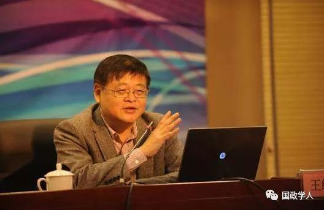

收录于合集

简 介
【 作者 】王缉思，北京大学国际关系学院教授、国际战略研究院院长。主要教学和研究方向为美国外交、中美关系、亚太安全。
【 来源 】《世界政治的终极目标》，王缉思著，中信出版社，2018年8月。本文为《世界政治的终极目标》一书书摘，注释从略，标题及小标题为编者所加，推文内容转自澎湃新闻。
摘要不存在以下内容请忽略
国家海洋战略是指导国家海洋事业发展和保障国家海洋利益安全的总体方略。海洋安全战略的谋划与制定是多种因素共同作用的结果。其中，海洋安全利益是海洋安全战略制定和实施的出发点和归宿点。海洋地缘环境是决定海洋安全环境最直接和主要的外部因素。海洋安全力量是海洋安全战略的主要实施力量。海洋历史与文化传统影响着海洋安全战略的特性。它们彼此联系，相互作用，共同规范着海洋安全战略的发展方向。
关键词： 战略；海洋；安全

王缉思
正 文
中国日益融入世界之后，中国人越来越需要关注世界政治。不过，一般人在谈及“世界政治”的时候，首先想到的是“国际关系”，比如中国同美国、日本、俄罗斯、朝鲜的关系，美国对朝鲜、伊朗的政策等等。几年来，舆论界、社交媒体上热议的话题，包括钓鱼岛归属、南海争议、美国“萨德”反导系统部署在韩国、中国和印度的领土纠纷等等，也大多属于国际关系问题。
“国际关系”作为一门相对独立的学科，在中国已有三四十年的历史。尽管这门学问从社会科学的角度看并不成熟，似乎也并不高深，甚至有人讥讽国际关系学者议论时政的水平还不如北京的出租汽车司机。但国际关系热点经久不息，已经深入中国人的脑海，经常引起热烈讨论，是不争的事实。
越过国际关系
我认为，“世界政治”作为一门学问，研究的是全世界范围内政治发展的总趋势、各个国家和地区内部的政治、国家之间的关系（即“国际关系”），比一般理解的“国际关系”涉及的领域更深更广。比如，2016年特朗普为什么能够当选总统，属于世界政治范畴。这个问题跟国际关系和美国外交不甚相关，而是美国国内政治发展的结果，但特朗普政府的政治偏好和决策却会大大影响国际关系。又如，始于2011年北非国家突尼斯、埃及的“阿拉伯之春”、叙利亚的难民危机、极端势力在全球各处频繁制造的暴恐活动，都并不起源于“国际关系”，而是国别和地区政治演变的结果，同时又作用于国际关系。
中国人了解世界政治的需求和眼光，也早已超越了国与国之间关系的视野，到达超越国界的全球问题和各国内部政治问题的层面。
自从“文化大革命”结束以来，中国对外求和平，对内求发展，国家越来越富强。同时，我们强调世界是丰富多彩的，不能照搬西方国家的发展模式，而要坚持中国特色的社会主义道路。世界政治当然是丰富多彩的，各国各民族都有自己的特色。有的地方鲜艳夺目，吸引众多游客和投资贸易，有的地方却昏暗无光，贫困凋零，腐败横行。
为什么在全球化深入发展的时代，国家、地区间的发展差距却没有明显缩小？为什么绝大多数国家在宪法条文上都有自由、民主、法治的条文，在政治制度和指导思想上却千差万别？美国几十年来一直是世界首富，美国经济到2016年已经基本摆脱了8年前金融危机的阴影，就业率也相当高，为什么大部分美国选民却在这时感觉自己的国家“没有走在正确的道路上”，要求国家政治改弦更张？包括中国在内的东亚国家和地区都视“现代化”为国家的奋斗目标，但中东地区的许多政治家和公民却不推崇“现代化”，反而推崇政治和社会的“伊斯兰化”，这是为什么？
这本小书想从“政治的终极目标”的角度，对世界政治的多样性和同一性做出一些解释。一方面，不同经济发展水平、不同文化背景、不同政治制度的国家及其国民，都有一些相同的善恶标准，比如都说自己爱好和平、反对战争，向往安定富足的生活。这应当是中国提出建构“人类命运共同体”的前提和基础。另一方面，人们却会为领土纷争而战，为宗教信仰不同而发生冲突，为争取自由公正而奋力反抗暴政。这只能说明，一些国家、群体和个人，在一些情况下，会认为有比和平、安定和富足更值得追求的政治目标。由此我们看到，人类政治的终极目标不止一个两个，而是多个，它们之间既有和谐之处，也可能发生矛盾。
什么叫政治
在分析政治的终极目标之前，先要理解什么叫政治。从古到今，人们对政治有着爱恨交织的矛盾认知。在许多人心目中，政治是一种恶，政治是一小撮有野心的政客之间争权夺利的肮脏交易，充斥着阴谋、暴力、谎言、操纵、腐败。早在1775年，英国人塞缪尔·约翰逊将政治斥为“不过是飞黄腾达的工具而已”。19世纪英国阿克顿勋爵的名言：“权力导致腐败，绝对的权力导致绝对的腐败”至今广为流传。马基雅维利在《君主论》中公然鼓吹，政治领袖为了争夺、维护和扩大权力，可以利用诡诈、残忍和操纵的手段。
也有人认为政治是一种善。古希腊哲学家亚里士多德在其著作《政治学》中指出，人天生是一种政治动物，人的本性具有社会性、合作性，他们能通过政治来达到更完善的生活。亚里士多德认为，人类试图改善生活并创造美好社会的活动就是政治。亚里士多德把知识看成“善”的学问，研究个人之善的学问是伦理学，研究家庭或村落之善的学问是经济学，研究城邦或国家之善的学问是政治学，而城邦或群体的善是最高的善，因此亚里士多德把政治学看成“最高的学问”。法国18世纪的思想家让- 雅克·卢梭认为，政治参与是一种内在的善，只有所有公民直接且不简单地参与政治生活，国家才能真正服务于公益。
其实，政治就像经济、法律等许多事物和现象一样，是中性的。既可以看到肮脏的、向恶的政治，也可以发现清明的、向善的政治。即使像许多人简单理解的那样，“政治就是权力斗争”，也有“好人斗坏人”、“坏人斗坏人”，还是“坏人斗好人”之分，而判断谁是好人，谁是坏人，取决于观察者的政治立场。
在全球化时代，无论是在发达的大都市纽约，还是在人烟稀少的阿富汗山区，人们都很难逃离政治。诚如美国政治学者罗伯特达尔所说：“每一个人，无论你是否喜欢，事实上都不能完全置身于政治之外。一位公民，在某个国家、城镇、学校、教会、商号、工会、俱乐部、政党、公民社团以及大量其他组织的治理机构中，都会碰到政治。”更不消说，中国人所受的教育，一直要求我们“讲政治”，要有“政治意识”。
“政治”这个概念在中国和西方都由来已久。在古代中国，“政”和“治”两个字更多是分开使用。“政”指国家的权力、制度、秩序和法令。“政”在儒家经典中也指“正”、“善”的生活，如“政者，正也。子帅以正，孰敢不正？”（《论语·颜渊》）。“治”也常用于两种含义：一是指管理和教化人民，二是指社会安定、秩序良好的状况。到了近代，日本人在翻译西方概念时造出了汉字的“政治”一词。把“政”和“治”合成“政治”一词的中国人里，最有影响力的是孙中山。孙中山的“政治”定义是：“政就是众人之事，治就是管理，管理众人之事就是政治。”
政治的英文是politics,其词源是古希腊语polis，指城堡或者卫城即人们商议公务的地方。由此政治可以理解为与城邦有关的事务，转化到现代，就是与国家有关的事务。把政治界定为国家事务，是自古以来人们的一般理解。
现代西方社会出现了多元化，政治活动已不限于政府、议会、政党。政治学在西方发展成为一门独立学科以后，“政治”的定义更加五花八门，不下数十种。英国政治学者安德鲁·海伍德把对政治的定义归纳为四类：作为政府艺术的政治；作为公共事务的政治；作为妥协和共识的政治；作为权力和资源分配的政治。按照海伍德的分类，政治不仅仅是国家事务，而是像孙中山所说，是“管理众人之事”。
美国政治学者哈罗德·拉斯韦尔1936年出版了一本经典著作，书名是《政治：谁得到什么,何时得到，如何得到》（Politics: Who Gets What, When, How），在标题上就给政治下了一个简明的定义。拉斯韦尔认为，政治学研究的任务在于说明价值和权力之间的相互依存关系，价值如何影响权力的分配和利用，关于权力的定位和利用又怎样影响种种价值的分配。因此政治学涉及政治关系：谁得到什么，何时和如何得到。政治可以被视为围绕稀缺资源的争斗，权力则是进行斗争的手段。但是，拉斯韦尔热衷于研究政治权贵集团和政治权势人物如何利用权力去获得社会上值得向往的东西。权势人物取得的社会价值最多，他们是社会精英，其余人是普通群众。精英通过象征、暴力、物资和实际措施等办法获取最多的社会价值。拉斯韦尔列举了三种社会价值：安全、收入和尊敬。
美国政治学者戴维·伊斯顿在上个世纪50至60年代的学术著述中，把政治界定为“为一个社会对价值进行权威性分配”（the authoritative allocation of values fora society）。这是当代政治学界广泛接受的一个定义，也是我本人十分认同并在本书中贯穿始终的一个概念。在伊斯顿论述政治系统结构的三部著述中，他详细阐述了一个政治系统如何通过互动,为一个社会权威性地分配价值。他提到，政治包括很多不同过程，在这些过程中对社会压力进行反馈，通过对利益的奖赏或惩罚来达到目标。伊斯顿认为，政治学研究涉及各种权威性的分配方法或政策，它力求了解各种价值如何被权威性地分配给整个社会。
“ 稀缺资源”与“权威性分配”
关于什么是价值，伊斯顿的解释是：“价值可以是任何物品、活动、观念、原则、目标或者其他现象，很多人将可估的价值加于其上。这一价值被政治共同体中的许多个人和群体视为良好的、可取的、有吸引力的、有用的、有报酬的、可受益的，或者有利的。某一套价值可能是有形的或物质的，即以货币、财产或其他形式存在的经济产品、服务和条件。另一套价值可能是无形的，即象征性的、意识形态的、文化的、道德的、宗教的。无形的价值在当代美国政治中的实例包括政治活动家表达的目标，他们说自己关注于‘社会 ’或‘ 家庭’问题，着力于推崇或维护‘社会’或‘家庭’的价值。”
伊斯顿这段话有点绕嘴，简括并加以延伸，是这个意思：价值是一个社会中被许多人视为好的、有用的东西，包括货币、财产等有形的价值，也包括文化、宗教等无形的价值。美国人崇尚的自由主义或者保守主义价值观，部分美国人坚持的同性恋者的权利，都在“价值”的范畴之内。
拉斯韦尔和伊斯顿在其著述中，还用“稀缺资源”（scarceresources）来解释什么叫“价值”，这就使该概念更清晰、更容易应用了。1983年，伊斯顿作为美国加州大学欧文分校教授到北京大学国际政治系讲学。我清楚地记得，当他解释“稀缺资源”时说，有些资源在社会上看起来没有什么价值，但到了它稀缺的时候，就有了价值。他举例说，如果干净的空气在某种社会环境下成为稀缺资源，那么如何权威性地分配干净的空气就成了政治问题。这位老教授的预见力令人钦佩——30多年后气候变化问题成了世界政治的热点，碳排放交易是“权威性分配”干净空气的典型案例。
关于什么是“权威性分配”，最容易理解的一种情形，是国家与政府的决策及其执行。但在我看来，生活中很多与政府无关的事也可以看成政治。比如在一个单位里评技术职称。职称的名额通常小于申请者的人数，因此职称属于“稀缺资源”，也就有了“价值”。单位里“评职称”，大多是在特定时间里，通过评议、投票、上级部门批准等具“权威性”的程序，将名额“分配”给个人。同时，评职称也符合拉斯韦尔的“政治”定义——“谁得到什么，何时得到，如何得到”。从这个意义上说，评职称是典型的政治过程，只不过是“微观政治”。
本书所关心的当然不是评职称式的微观政治，而是国际社会和各国社会内部的宏观政治，但这些政治现象不仅仅和国家或政府相关。同伊斯顿和许多政治领域的著述不同的是，本书把关注的重心放在什么是世界政治中的价值或稀缺资源，也就是各国社会所追求的政治目标，而主要不是关注政治系统及其运作方式、过程和结果。政治价值、目标和主题，既是客观存在的，也是主观判断出来的。它们在人类历史发展的不同阶段，在不同的社会里，有不同的取舍和侧重。
更多阅读
【地区秩序】阿米塔夫·阿查亚：权力转移还是范式变化？中国崛起与亚洲新兴安全秩序 | 国政学人
国政学人 （ID：guozhengxueren)
为方便学人及时阅读高质量文章
别忘把国政学人设置 星标 哦~